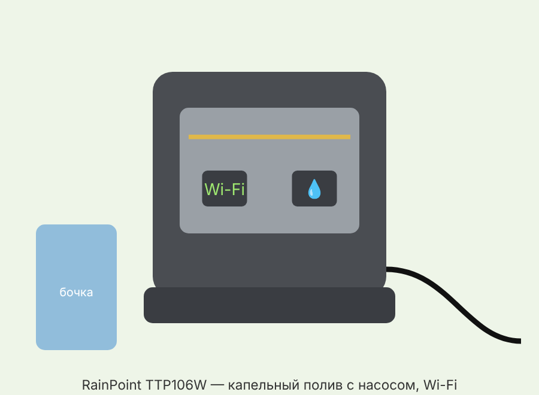
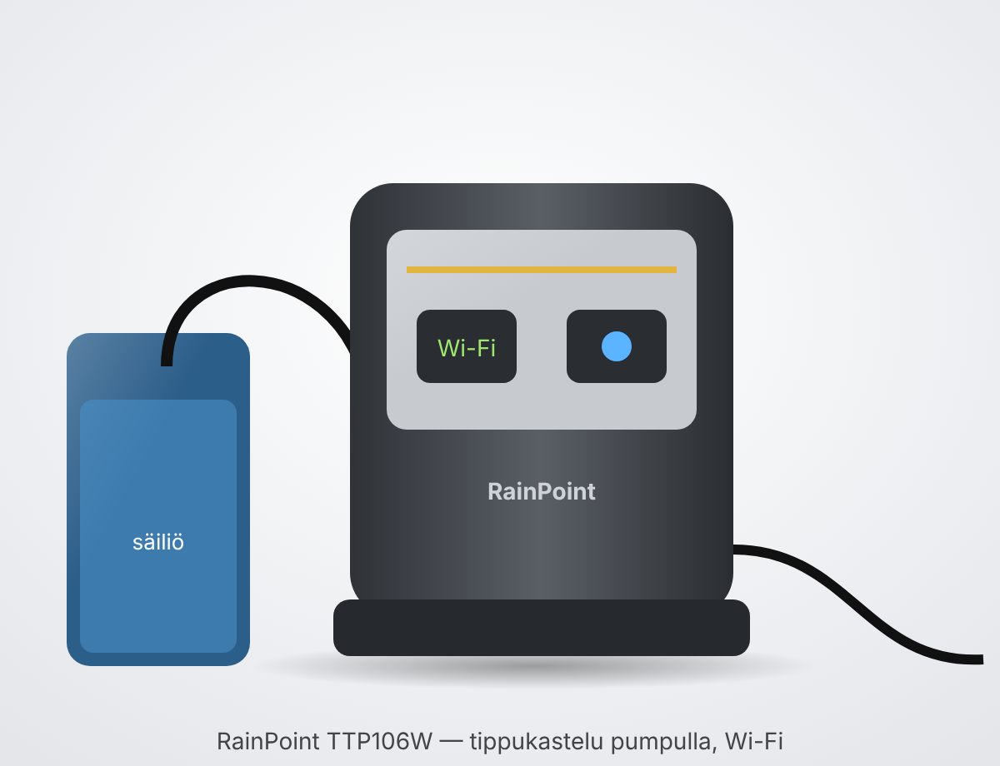

• Насос-таймер забирает воду из бочки/ёмкости и подаёт её по трубке к капельницам у растений. • Управление — приложение RainPoint-Tuya по Wi-Fi 2.4 ГГц, шлюз (хаб) не нужен. • Питание: USB-кабель или 4 батарейки AA. Wi-Fi и удалённое управление работают ТОЛЬКО при подключённом USB. • На батарейках насос выполняет уже заданное расписание и ручной полив кнопкой, но удалённо не управляется.
• Проверено у нас дома: батарейный лоток — это само ДНО насоса. Оно сдвигается параллельно, вбок/наружу, целиком, без винтов и защёлок-кнопок. Тянуть ровно, не поворачивая. • Внутри 4 батарейки AA 1,5 В (щелочные), ставить по меткам «+» и «−». • Закрыть: задвинуть дно обратно до упора — оно же защищает от воды. • После установки нажать кнопку — должен загореться индикатор. • На одних батарейках работает уже заданное расписание и ручной полив; для Wi-Fi и приложения нужен USB-кабель питания. • На зиму батарейки вынимать.
• Насос-таймер TTP106W. • USB-кабель (по данным продавца — USB-A → micro-USB; блок питания в комплект не входит — по инструкции не указано). • Трубка 10 м (внутренний диаметр ~4,3 мм / >1/6", наружный 1/4"). • Входной фильтр (опускается в ёмкость). • Микрокапельницы — 10 шт. • Краны-переключатели (switch valve) — 10 шт. (по странице характеристик). • Фитинги-ёлочки: прямые, T-образные, крестовины; заглушки для трубки. • Антисифонное устройство (обратный клапан). • Съёмный крючок — чтобы подвесить насос. • Точные количества фитингов и заглушек в официальной инструкции приведены на рисунке; продавцы указывают: 3 прямых, 10 T, 3 крестовины, 3 заглушки.
• Кнопка Wi-Fi — сопряжение с Wi-Fi и сброс (удерживать 5 с). • Кнопка ручного полива (Manual) — запуск/остановка ручного полива. • Входной штуцер (Inlet) — забор воды из ёмкости (через фильтр). • Выходной штуцер (Outlet) — подача воды к растениям. • USB-разъём — питание и работа Wi-Fi. • Батарейный лоток — 4×AA, сзади. • Индикатор полива — показывает, идёт ли полив. • Индикатор Wi-Fi: быстро мигает — не сопряжён (режим сопряжения); медленно мигает — питание есть, сети нет; горит постоянно — подключён. • Номер партии (LOT NO.) — на задней стороне корпуса (нужен для гарантии).
• USB (5 В): обязательно для сопряжения, Wi-Fi и управления из приложения. Держите USB подключённым постоянно. • Батарейки 4×AA: резерв — только полив по уже заданному расписанию и ручной полив кнопкой. • Если подключены и USB, и батарейки — приоритет у USB. • Солнечной панели у этой модели нет (по инструкции не предусмотрено).
• Вставьте батарейки (необязательно) и подключите USB-кабель. • Поставьте/подвесьте насос рядом с растениями: дальность и высота подачи 2–3 м, перепад высоты между насосом и растениями — не более ~2,5 м. • Порядок сборки по ходу воды: ёмкость → фильтр → вход насоса → выход насоса → антисифонное устройство → трубка → краны → капельницы. • Наденьте трубку с фильтром на вход насоса и опустите фильтр в ёмкость с водой (на дно). • Антисифонное устройство ставьте на выходную трубку как можно ближе к насосу и строго по направлению потока (стрелка). Без него вода может самотёком уходить из бочки. • Нарежьте трубку и разведите её к растениям через T-фитинги и крестовины; концы линий закройте заглушками. • Краны-переключатели: вставьте трубку с обеих сторон; поворотом крана регулируете или перекрываете поток на участке. • Капельницы: разрыхлите землю и воткните капельницу минимум на 7–8 см (3 дюйма). • Если трубка туго надевается — подержите конец 10 с в горячей воде или смажьте каплей растительного масла. • Проверка: нажмите кнопку ручного полива, убедитесь, что вода доходит до всех растений и нигде не течёт; подтяните соединения. • Только после успешной проверки настраивайте расписание.
• Установите приложение RainPoint-Tuya (Google Play / App Store), зарегистрируйтесь и войдите. (Продавцы указывают, что работает и с Tuya Smart.) • Телефон подключите к сети 2.4 ГГц — 5 ГГц не поддерживается. На двухдиапазонном роутере при необходимости дайте сети 2.4 ГГц отдельное имя. • Насос должен питаться от USB. • Добавьте устройство: «Smart Irrigation» → «Wi-Fi Water Timer with Pump». • Выберите сеть 2.4 ГГц и введите пароль. • Удерживайте кнопку Wi-Fi 5 с, пока индикатор не начнёт быстро мигать, подтвердите в приложении. • Сопряжение занимает около 1–2 минут; при успехе индикатор Wi-Fi горит постоянно.
• Автоматический режим: «How Often» — периодичность (от 1 часа до 7 дней; по странице характеристик — каждые 0–23 ч 59 мин или каждые 1–7 дней). • «How Long» — длительность полива: от 20 секунд до 30 минут. • «Delay» — отсрочка начала: до 24 часов (удобно, например, после дождя). • Обязательно включите переключатель «Auto Run» — без него расписание не работает. • Расписание по дням недели и сценарии по условиям создаются в разделе «Scene» → «Automation»; есть Tap-to-Run (запуск одним нажатием). • Ручной полив: переключатель в приложении или кнопка Manual на насосе (повторное нажатие — стоп). • Приложение присылает уведомления: устройство офлайн, нехватка воды, состояние батареек.
• Удалите устройство в приложении. • Отключите питание (USB и батарейки) на 30–60 секунд. • Подключите USB снова. • Удерживайте кнопку Wi-Fi, пока индикатор не начнёт быстро мигать, и выполните сопряжение заново.
• Не подключается к Wi-Fi → проверьте, что сеть 2.4 ГГц; поднесите насос ближе к роутеру; отключите USB и батарейки на ~10 с, подключите USB, удерживайте Wi-Fi до быстрого мигания и повторите сопряжение. • Не работает удалённое управление → насос работает от батареек: подключите USB; проверьте Wi-Fi; при необходимости переподключите в приложении. • Устройство «офлайн» → восстановите питание USB, проверьте роутер, переподключите к Wi-Fi. • Расписание не срабатывает → проверьте, есть ли вода в ёмкости у фильтра; включён ли «Auto Run»; после пропадания питания расписание может сброситься — задайте заново. • Неравномерный полив → укоротите трубку, придвиньте растения к насосу, используйте краны на первых ответвлениях, проверьте соединения. • Трубка не надевается → горячая вода 10 с или растительное масло на конец трубки. • Вода течёт назад/самотёком → проверьте антисифонное устройство у выхода насоса и направление его установки.
• Регулярно промывайте фильтр чистой водой — засор снижает поток. • Проверяйте трубки и соединения на подтекание; следите, чтобы в ёмкости была вода. • Рабочая температура 3–50 °C — на зиму убрать (в Финляндии — до заморозков). • Перед хранением: остановить полив → снять трубки → слить остатки воды → промыть фильтр → вынуть батарейки → хранить в сухом месте. • Весной: подключить USB, проверить Wi-Fi, осмотреть трубки, проверить ручной полив, восстановить расписание. • Батарейный лоток всегда закрывайте плотно (защита от воды).
• Модель: TTP106W (комплект IK10PW). • Рабочее давление: 0,3 бар; макс. давление: ≥200 кПа. • Производительность: 30 л/ч. • Высота подъёма и дальность подачи: 2–3 м (рекомендуется перепад ≤2,5 м). • Длительность полива: 20 с – 30 мин; частота: от 1 ч до 7 дней; отсрочка: до 24 ч. • Питание: USB 5 В или 4×AA 1,5 В. • Wi-Fi 2.4 ГГц, приложение RainPoint-Tuya. • Защита: IPX2 (только от капель — не для дождя, ставить под навесом/в помещении). • Рабочая температура: 3–50 °C; корпус ABS. • Размер насоса ~84×66×74 мм, масса ~0,16 кг (по данным продавца). • Гарантия: 1 год (ограниченная), поддержка: service@rainpointonline.com.
• The pump timer draws water from a barrel/container and delivers it through tubing to drippers at the plants. • Controlled with the RainPoint-Tuya app over 2.4 GHz Wi-Fi; no gateway (hub) needed. • Power: USB cable or 4 AA batteries. Wi-Fi and remote control work ONLY when USB is connected. • On batteries the pump runs the schedule that is already set and manual watering with the button, but it cannot be controlled remotely.
• Checked at home: the battery tray is the BOTTOM of the pump itself. It slides out sideways/outwards in parallel, in one piece, with no screws or push-button catches. Pull it straight, without twisting. • Inside are 4 AA 1.5 V batteries (alkaline); insert them according to the “+” and “−” marks. • To close: slide the bottom back in all the way — it also protects against water. • After inserting them, press the button — the indicator should light up. • On batteries alone the schedule already set and manual watering work; Wi-Fi and the app need the USB power cable. • Remove the batteries for the winter.
• TTP106W pump timer. • USB cable (according to the seller — USB-A → micro-USB; a power adapter is not included — not stated in the manual). • 10 m tubing (inner diameter ~4.3 mm / >1/6", outer 1/4"). • Inlet filter (goes into the container). • Micro drippers — 10 pcs. • Switch valves — 10 pcs. (according to the specifications page). • Barbed fittings: straight, T-shaped, cross; end plugs for the tubing. • Anti-siphon device (check valve). • Removable hook — to hang the pump. • The exact numbers of fittings and plugs are shown in a figure in the official manual; sellers state: 3 straight, 10 T, 3 cross, 3 plugs.
• Wi-Fi button — Wi-Fi pairing and reset (hold for 5 s). • Manual watering button (Manual) — starts/stops manual watering. • Inlet connector (Inlet) — draws water from the container (through the filter). • Outlet connector (Outlet) — supplies water to the plants. • USB port — power and Wi-Fi operation. • Battery tray — 4×AA, at the back. • Watering indicator — shows whether watering is in progress. • Wi-Fi indicator: flashing fast — not paired (pairing mode); flashing slowly — powered, no network; steady — connected. • Batch number (LOT NO.) — on the back of the housing (needed for the warranty).
• USB (5 V): required for pairing, Wi-Fi and app control. Keep USB connected at all times. • 4×AA batteries: backup — only watering on the schedule already set and manual watering with the button. • If both USB and batteries are connected, USB takes priority. • This model has no solar panel (not provided for in the manual).
• Insert the batteries (optional) and connect the USB cable. • Place/hang the pump near the plants: delivery distance and lift 2–3 m; the height difference between the pump and the plants should be no more than ~2.5 m. • Assembly order following the water flow: container → filter → pump inlet → pump outlet → anti-siphon device → tubing → valves → drippers. • Push the tubing with the filter onto the pump inlet and lower the filter into the water container (to the bottom). • Fit the anti-siphon device on the outlet tubing as close to the pump as possible and strictly in the direction of flow (arrow). Without it, water may siphon out of the barrel by gravity. • Cut the tubing and route it to the plants using T-fittings and crosses; close the ends of the lines with plugs. • Switch valves: insert tubing on both sides; turning the valve adjusts or shuts off the flow in that section. • Drippers: loosen the soil and push the dripper in at least 7–8 cm (3 inches). • If the tubing is hard to push on, hold the end in hot water for 10 s or put a drop of vegetable oil on it. • Test: press the manual watering button and make sure the water reaches all plants and nothing leaks anywhere; tighten the connections. • Set up the schedule only after a successful test.
• Install the RainPoint-Tuya app (Google Play / App Store), register and log in. (Sellers say it also works with Tuya Smart.) • Connect the phone to a 2.4 GHz network — 5 GHz is not supported. On a dual-band router, give the 2.4 GHz network a separate name if necessary. • The pump must be powered via USB. • Add the device: “Smart Irrigation” → “Wi-Fi Water Timer with Pump”. • Select the 2.4 GHz network and enter the password. • Hold the Wi-Fi button for 5 s until the indicator starts flashing fast, then confirm in the app. • Pairing takes about 1–2 minutes; when successful, the Wi-Fi indicator stays lit.
• Automatic mode: “How Often” — frequency (from 1 hour to 7 days; according to the specifications page — every 0–23 h 59 min or every 1–7 days). • “How Long” — watering duration: from 20 seconds to 30 minutes. • “Delay” — start delay: up to 24 hours (useful, for example, after rain). • Be sure to turn on the “Auto Run” switch — without it the schedule does not work. • Weekday schedules and condition-based scenes are created under “Scene” → “Automation”; there is also Tap-to-Run (start with one tap). • Manual watering: the switch in the app or the Manual button on the pump (press again to stop). • The app sends notifications: device offline, water shortage, battery status.
• Remove the device in the app. • Disconnect the power (USB and batteries) for 30–60 seconds. • Reconnect USB. • Hold the Wi-Fi button until the indicator starts flashing fast and pair again.
• Will not connect to Wi-Fi → check that the network is 2.4 GHz; move the pump closer to the router; disconnect USB and batteries for ~10 s, reconnect USB, hold Wi-Fi until it flashes fast and repeat pairing. • Remote control does not work → the pump is running on batteries: connect USB; check the Wi-Fi; reconnect in the app if needed. • Device “offline” → restore USB power, check the router, reconnect to Wi-Fi. • Schedule does not run → check that there is water in the container at the filter; that “Auto Run” is on; after a power loss the schedule may be reset — set it again. • Uneven watering → shorten the tubing, move the plants closer to the pump, use the valves on the first branches, check the connections. • Tubing will not go on → hot water for 10 s or vegetable oil on the tubing end. • Water flows back/by gravity → check the anti-siphon device at the pump outlet and the direction it is fitted in.
• Rinse the filter regularly with clean water — clogging reduces the flow. • Check the tubing and connections for leaks; make sure there is water in the container. • Operating temperature 3–50 °C — put it away for the winter (in Finland — before the frosts). • Before storage: stop watering → remove the tubing → drain the remaining water → rinse the filter → remove the batteries → store in a dry place. • In spring: connect USB, check the Wi-Fi, inspect the tubing, test manual watering, restore the schedule. • Always close the battery tray tightly (protection against water).
• Model: TTP106W (kit IK10PW). • Operating pressure: 0.3 bar; max. pressure: ≥200 kPa. • Flow rate: 30 l/h. • Lift height and delivery distance: 2–3 m (recommended height difference ≤2.5 m). • Watering duration: 20 s – 30 min; frequency: from 1 h to 7 days; delay: up to 24 h. • Power: USB 5 V or 4×AA 1.5 V. • 2.4 GHz Wi-Fi, RainPoint-Tuya app. • Protection: IPX2 (against drips only — not rainproof; place under a canopy/indoors). • Operating temperature: 3–50 °C; ABS housing. • Pump size ~84×66×74 mm, weight ~0.16 kg (according to the seller). • Warranty: 1 year (limited), support: service@rainpointonline.com.

• Pumppuajastin ottaa vettä tynnyristä/säiliöstä ja johtaa sen letkua pitkin kasvien vieressä oleviin tippusuuttimiin. • Ohjaus RainPoint-Tuya-sovelluksella 2,4 GHz:n Wi-Fin kautta; yhdyskäytävää (keskitintä) ei tarvita. • Virta: USB-kaapeli tai 4 AA-paristoa. Wi-Fi ja etäohjaus toimivat VAIN, kun USB on kytkettynä. • Paristoilla pumppu noudattaa jo asetettua aikataulua ja käsikastelu toimii painikkeella, mutta etäohjaus ei toimi.
• Tarkistettu kotona: paristolokero on pumpun POHJA. Se liukuu suoraan sivulle/ulos yhtenä kappaleena, ilman ruuveja tai painikesalpoja. Vedä suoraan kääntämättä. • Sisällä on 4 AA-paristoa 1,5 V (alkali); aseta ne ”+”- ja ”−”-merkintöjen mukaan. • Sulkeminen: työnnä pohja takaisin pohjaan asti — se suojaa myös vedeltä. • Asennuksen jälkeen paina painiketta — merkkivalon pitäisi syttyä. • Pelkillä paristoilla toimivat jo asetettu aikataulu ja käsikastelu; Wi-Fi ja sovellus vaativat USB-virtakaapelin. • Poista paristot talveksi.
• TTP106W-pumppuajastin. • USB-kaapeli (myyjän mukaan USB-A → micro-USB; virtalähde ei sisälly — ei mainittu käyttöohjeessa). • Letku 10 m (sisähalkaisija ~4,3 mm / >1/6", ulkohalkaisija 1/4"). • Imusuodatin (lasketaan säiliöön). • Mikrotippusuuttimet — 10 kpl. • Sulkuventtiilit (switch valve) — 10 kpl (teknisten tietojen sivun mukaan). • Väkäliittimet: suorat, T-haarat, ristiliittimet; letkun tulpat. • Lappoesto (takaiskuventtiili). • Irrotettava koukku — pumpun ripustamiseen. • Liittimien ja tulppien tarkat määrät on esitetty virallisen käyttöohjeen kuvassa; myyjät ilmoittavat: 3 suoraa, 10 T-haaraa, 3 ristiliitintä, 3 tulppaa.
• Wi-Fi-painike — Wi-Fi-paritus ja nollaus (pidä 5 s). • Käsikastelupainike (Manual) — käsikastelun käynnistys/pysäytys. • Tuloliitin (Inlet) — veden otto säiliöstä (suodattimen kautta). • Lähtöliitin (Outlet) — veden syöttö kasveille. • USB-liitäntä — virta ja Wi-Fi-toiminta. • Paristolokero — 4×AA, takana. • Kastelun merkkivalo — näyttää, onko kastelu käynnissä. • Wi-Fi-merkkivalo: vilkkuu nopeasti — ei paritettu (paritustila); vilkkuu hitaasti — virta on, verkkoa ei; palaa jatkuvasti — yhdistetty. • Eränumero (LOT NO.) — rungon takapuolella (tarvitaan takuuta varten).
• USB (5 V): välttämätön paritukseen, Wi-Fiin ja sovellusohjaukseen. Pidä USB jatkuvasti kytkettynä. • Paristot 4×AA: varavirta — vain kastelu jo asetetun aikataulun mukaan ja käsikastelu painikkeella. • Jos sekä USB että paristot on kytketty, USB on etusijalla. • Tässä mallissa ei ole aurinkopaneelia (käyttöohjeessa ei mainita).
• Aseta paristot (valinnainen) ja kytke USB-kaapeli. • Aseta/ripusta pumppu kasvien lähelle: syöttömatka ja nostokorkeus 2–3 m, pumpun ja kasvien korkeusero enintään ~2,5 m. • Kokoamisjärjestys veden kulkusuunnassa: säiliö → suodatin → pumpun tulo → pumpun lähtö → lappoesto → letku → venttiilit → tippusuuttimet. • Työnnä suodattimella varustettu letku pumpun tuloliittimeen ja laske suodatin vesisäiliöön (pohjalle). • Asenna lappoesto lähtöletkuun mahdollisimman lähelle pumppua ja tarkasti virtaussuuntaan (nuoli). Ilman sitä vesi voi valua tynnyristä itsestään painovoiman avulla. • Leikkaa letku ja vedä se kasveille T-haarojen ja ristiliittimien avulla; sulje linjojen päät tulpilla. • Sulkuventtiilit: työnnä letku kummallekin puolelle; venttiiliä kääntämällä säädät tai suljet virtauksen kyseisellä osuudella. • Tippusuuttimet: kuohkeuta multaa ja työnnä suutin vähintään 7–8 cm:n (3 tuuman) syvyyteen. • Jos letku menee tiukasti liittimeen, pidä letkun päätä 10 s kuumassa vedessä tai voitele tipalla ruokaöljyä. • Testaus: paina käsikastelupainiketta ja varmista, että vesi tulee kaikille kasveille eikä vuoda mistään; kiristä liitokset. • Määritä aikataulu vasta onnistuneen testin jälkeen.
• Asenna RainPoint-Tuya-sovellus (Google Play / App Store), rekisteröidy ja kirjaudu sisään. (Myyjien mukaan toimii myös Tuya Smart -sovelluksella.) • Yhdistä puhelin 2,4 GHz:n verkkoon — 5 GHz ei ole tuettu. Anna tarvittaessa kaksitaajuisen reitittimen 2,4 GHz:n verkolle oma nimi. • Pumpun on saatava virta USB:n kautta. • Lisää laite: ”Smart Irrigation” → ”Wi-Fi Water Timer with Pump”. • Valitse 2,4 GHz:n verkko ja anna salasana. • Pidä Wi-Fi-painiketta 5 s, kunnes merkkivalo alkaa vilkkua nopeasti, ja vahvista sovelluksessa. • Paritus kestää noin 1–2 minuuttia; kun se onnistuu, Wi-Fi-merkkivalo palaa jatkuvasti.
• Automaattinen tila: ”How Often” — toistuvuus (1 tunnista 7 päivään; teknisten tietojen sivun mukaan 0–23 h 59 min välein tai 1–7 päivän välein). • ”How Long” — kastelun kesto: 20 sekunnista 30 minuuttiin. • ”Delay” — aloituksen viive: enintään 24 tuntia (kätevä esimerkiksi sateen jälkeen). • Muista kytkeä ”Auto Run” -kytkin päälle — ilman sitä aikataulu ei toimi. • Viikonpäiväkohtaiset aikataulut ja ehtoihin perustuvat skenaariot luodaan kohdassa ”Scene” → ”Automation”; lisäksi on Tap-to-Run (käynnistys yhdellä napautuksella). • Käsikastelu: kytkin sovelluksessa tai pumpun Manual-painike (uusi painallus — pysäytys). • Sovellus lähettää ilmoituksia: laite offline-tilassa, vesi loppumassa, paristojen tila.
• Poista laite sovelluksesta. • Katkaise virta (USB ja paristot) 30–60 sekunniksi. • Kytke USB takaisin. • Pidä Wi-Fi-painiketta, kunnes merkkivalo alkaa vilkkua nopeasti, ja parita laite uudelleen.
• Ei yhdisty Wi-Fiin → tarkista, että verkko on 2,4 GHz; tuo pumppu lähemmäs reititintä; irrota USB ja paristot ~10 sekunniksi, kytke USB, pidä Wi-Fi-painiketta, kunnes valo vilkkuu nopeasti, ja toista paritus. • Etäohjaus ei toimi → pumppu toimii paristoilla: kytke USB; tarkista Wi-Fi; yhdistä tarvittaessa uudelleen sovelluksessa. • Laite ”offline” → palauta USB-virta, tarkista reititin, yhdistä uudelleen Wi-Fiin. • Aikataulu ei käynnisty → tarkista, onko säiliössä vettä suodattimen kohdalla ja onko ”Auto Run” päällä; sähkökatkon jälkeen aikataulu voi nollautua — aseta se uudelleen. • Epätasainen kastelu → lyhennä letkua, siirrä kasveja lähemmäs pumppua, käytä venttiileitä ensimmäisissä haaroissa, tarkista liitokset. • Letku ei mene liittimeen → kuumaa vettä 10 s tai ruokaöljyä letkun päähän. • Vesi valuu takaisin/itsestään → tarkista pumpun lähdön lappoesto ja sen asennussuunta.
• Huuhtele suodatin säännöllisesti puhtaalla vedellä — tukos heikentää virtausta. • Tarkista letkut ja liitokset vuotojen varalta; huolehdi, että säiliössä on vettä. • Käyttölämpötila 3–50 °C — korjaa talveksi pois (Suomessa ennen pakkasia). • Ennen säilytystä: pysäytä kastelu → irrota letkut → tyhjennä jäljellä oleva vesi → huuhtele suodatin → poista paristot → säilytä kuivassa paikassa. • Keväällä: kytke USB, tarkista Wi-Fi, tarkasta letkut, kokeile käsikastelua, palauta aikataulu. • Sulje paristolokero aina tiiviisti (suojaus vedeltä).
• Malli: TTP106W (sarja IK10PW). • Käyttöpaine: 0,3 bar; maks. paine: ≥200 kPa. • Tuotto: 30 l/h. • Nostokorkeus ja syöttömatka: 2–3 m (suositeltu korkeusero ≤2,5 m). • Kastelun kesto: 20 s – 30 min; toistuvuus: 1 h – 7 päivää; viive: enintään 24 h. • Virta: USB 5 V tai 4×AA 1,5 V. • Wi-Fi 2,4 GHz, RainPoint-Tuya-sovellus. • Suojaus: IPX2 (vain tippuvalta vedeltä — ei sateenkestävä, sijoita katoksen alle/sisätiloihin). • Käyttölämpötila: 3–50 °C; runko ABS-muovia. • Pumpun koko ~84×66×74 mm, paino ~0,16 kg (myyjän tietojen mukaan). • Takuu: 1 vuosi (rajoitettu), tuki: service@rainpointonline.com.